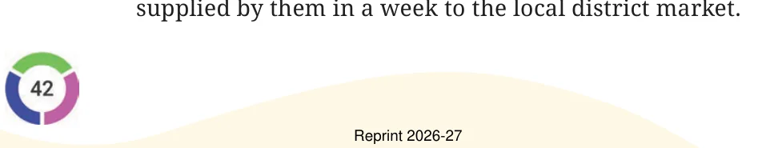
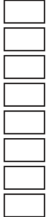
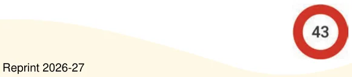

- 1.Read the situations given below. Write appropriate expressions for
each of them and find their values.
- (a)The district market in Begur operates on all seven days of
a week. Rahim supplies 9 kg of mangoes each day from his orchard and Shyam supplies 11 kg of mangoes each day from his orchard to this market. Find the amount of mangoes

- (b)Binu earns ₹20,000 per month. She spends ₹5,000 on rent,
₹5,000 on food, and ₹2,000 on other expenses every month. What is the amount Binu will save by the end of a year?
- (c)During the daytime a snail climbs 3 cm up a post, and during
the night while asleep, accidentally slips down by 2 cm. The post is 10 cm high, and a delicious treat is on its top. In how many days will the snail get the treat?
- 2.Melvin reads a two-page story every day except on Tuesdays and
Saturdays. How many stories would he complete reading in 8 weeks? Which of the expressions below describes this scenario?
- (a)\(5 \times 2 \times 8\)
- (b)\((7 - 2) \times 8\)
- (c)\(8 \times 7\)
- (d)\(7 \times 2 \times 8\)
- (e)\(7 \times 5 - 2\)
- (f)\((7 + 2) \times 8\)
- (g)\(7 \times 8 - 2 \times 8\)
- (h)\((7 - 5) \times 8\)
- 3.Find different ways of evaluating the following expressions:
- (a)\(1 - 2 + 3 - 4 + 5 - 6 + 7 - 8 + 9 - 10\)
- (b)\(1 - 1 + 1 - 1 + 1 - 1 + 1 - 1 + 1 - 1\)
- 4.Compare the following pairs of expressions using ‘<’, ‘>’ or ‘=’ or by
reasoning.
- (a)\(49 - 7 + 8 49 - 7 + 8\)

- (b)\(83 \times 42 - 18 83 \times 40 - 18\)
- (c)\(145 - 17 \times 8 145 - 17 \times 6\)
- (d)\(23 \times 48 - 35 23 \times (48 - 35)\)
- (e)\((16 - 11) \times 12 - 11 \times 12 + 16 \times 12\)
- (f)\((76 - 53) \times 88 88 \times (53 - 76)\)
- (g)\(25 \times (42 + 16) 25 \times (43 + 15)\)
- (h)\(36 \times (28 - 16) 35 \times (27 - 15)\)

- 5.Identify which of the following expressions are equal to the given
expression without computation. You may rewrite the expressions using terms or removing brackets. There can be more than one expression which is equal to the given expression.
- (a)\(83 - 37 - 12\)
- (i)\(84 - 38 - 12\)
- (ii)\(84 - (37 + 12)\)
- (iii)\(83 - 38 - 13\)
- (iv)\(- 37 + 83 - 12\)
- (b)\(93 + 37 \times 44 + 76\)
- (i)\(37 + 93 \times 44 + 76\)
- (ii)\(93 + 37 \times 76 + 44\)
- (iii)\((93 + 37) \times (44 + 76)\)
- (iv)\(37 \times 44 + 93 + 76\)
- 6.Choose a number and create ten different expressions having
that value.